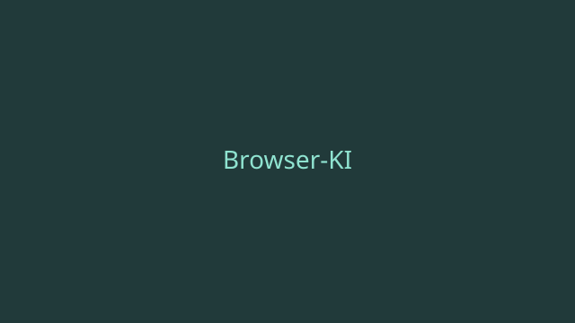
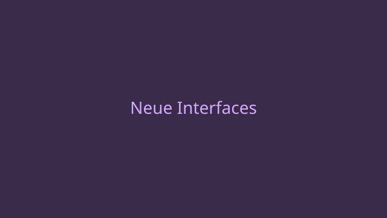
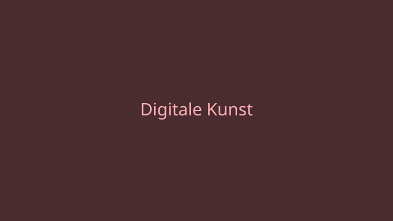

Immer mehr Anwendungen setzen auf berührungslose Steuerung per Handgeste.
Was vor wenigen Jahren noch Science-Fiction war, läuft heute direkt im
Browser. Wir werfen einen Blick auf die Technik dahinter.

Technologie
Browser-KI: Was Webcams heute erkennen können
Moderne Machine-Learning-Modelle laufen vollständig client-seitig und
erkennen Körperhaltung, Hände und Gesichter in Echtzeit. Kein Server,
keine Cloud — nur der Browser und die Webcam.

Kultur
Wie neue Interfaces unsere Kultur verändern
Von der Tastatur zur Geste: Jede neue Eingabemethode verändert nicht nur
wie wir mit Technik umgehen, sondern auch wie wir miteinander
kommunizieren. Ein Blick auf die kulturelle Dimension der Interaktion.

Kultur
Zwischen Bildschirm und Bühne: Digitale Kunstformen
Künstlerinnen und Künstler experimentieren zunehmend mit
Gestensteuerung als kreatives Werkzeug. Wir sprechen mit Kreativen
über neue Ausdrucksformen jenseits von Maus und Tastatur.